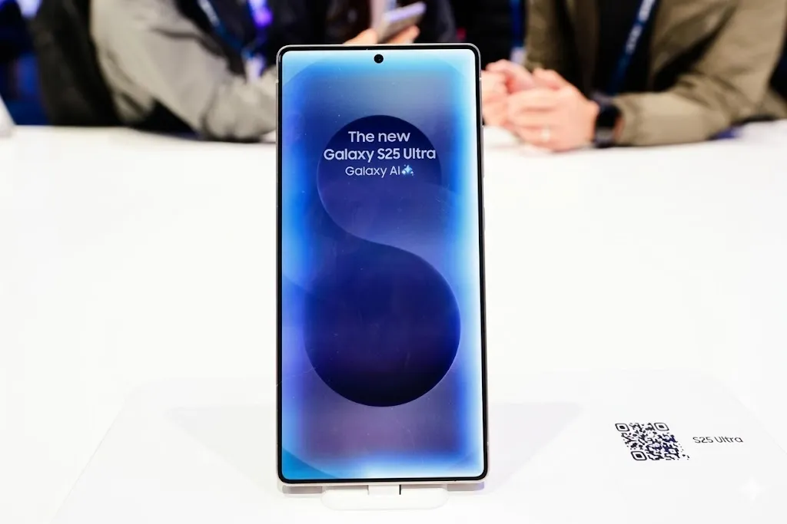

Samsung One UI 8.5 Release Date & Eligible Galaxy Devices List 2026


Samsung began rolling out One UI 8.5 on May 6, 2026 — its first major software update built on Android 16. The initial release went to South Korea, with a global push to North America, Europe, India, and other regions following on May 11. For most Galaxy owners, this is the biggest software update of the year, and the list of eligible devices is wider than many expected.
The update brings four AI features that previously shipped exclusively with the Galaxy S26 series: Audio Eraser, Creative Studio, Call Screening with real-time transcription, and Photo Assist. Whether your device gets all four or a trimmed version depends on which model you're running — something Samsung hasn't always been upfront about in previous update cycles.
Table of Contents
Samsung One UI 8.5 Official Release Timeline
The One UI 8.5 rollout follows Samsung's standard staged approach. South Korea received the update first on May 6, 2026, which is typical — Samsung uses its home market as the initial deployment region before widening the push. Global regions including the US, UK, Germany, France, India, Australia, and Southeast Asia began receiving the update on May 11.
The rollout within each region is also staged — meaning two people with identical devices in the same country won't necessarily receive the update on the same day. Samsung distributes updates in batches to monitor for critical bugs before fully opening the floodgates. If you haven't seen it yet, checking Settings → Software Update manually often prompts the download ahead of the automatic push.
One note worth flagging: Samsung confirmed that some older eligible devices will receive the update on a slightly delayed timeline, potentially weeks after the flagship rollout completes. If your device is on the eligible list but you haven't seen the update, it's likely queued rather than missing.
Complete List of Galaxy Devices Getting One UI 8.5
Samsung confirmed 25 Galaxy devices for the One UI 8.5 update. The full-featured version with all four AI tools goes to:
- Galaxy S Series: Galaxy S25, S25+, S25 Ultra, S24, S24+, S24 Ultra, S24 FE
- Galaxy Z Foldable: Z Fold7, Z Fold6, Z Flip7, Z Flip6
- Galaxy Tab: Tab S11, Tab S11+, Tab S11 Ultra, Tab S10, Tab S10+, Tab S10 Ultra, Tab S10 FE
Devices receiving a limited version of One UI 8.5 without the full AI feature set:
- Galaxy S23 Series: S23, S23+, S23 Ultra, S23 FE
- Galaxy A Series select models: A55, A35 (software update and Android 16 base only)
The distinction matters. If you own an S23, you'll get Android 16 and the new UI polish, but Audio Eraser and Creative Studio won't be available on your device. Samsung has tied those features to the hardware capabilities of its more recent Exynos and Snapdragon 8 Gen 3/4 chipsets.
Also Read
More Tech stories →Galaxy S Series: Who Gets the Full Update
The Galaxy S25 series — S25, S25+, and S25 Ultra — receives One UI 8.5 first and with every feature enabled, including the Galaxy AI tools and any S26-trickle-down features. These devices run Snapdragon 8 Elite and have no hardware constraints that would limit the update's scope.
The Galaxy S24 series gets the same full feature set. Samsung has maintained consistent software parity between the S25 and S24 lineup since launching the S25, and One UI 8.5 continues that pattern. S24 FE owners also receive the full update, which is a reasonable inclusion given the device launched just months before One UI 8.5's release.
The S23 series is where things get trimmed. Samsung is now in its third year of software support for S23 devices, and while they technically qualify for One UI 8.5 as part of the four-year Android update commitment, the AI features require on-device processing capabilities that older Snapdragon 8 Gen 2 chips can't match at the required speed.
Key Takeaways
- One UI 8.5 launched May 6, 2026 in South Korea, with global rollout beginning May 11 — based on Android 16.
- 25 Galaxy devices are eligible: full AI features go to S25, S24, Z Fold7/6, Z Flip7/6, and Tab S11/S10 series. S23 gets the update without the advanced AI tools.
- Four new AI features debut with One UI 8.5: Audio Eraser, Creative Studio, Call Screening, and Photo Assist — all previously exclusive to the Galaxy S26 series.
The Four New AI Features Explained
Audio Eraser uses on-device AI to isolate and remove specific types of background sound from video recordings. It can identify and suppress wind noise, crowd noise, or other interfering sounds while preserving the primary audio. This is genuinely useful for anyone recording at events, outdoors, or in noisy environments without a separate microphone.
Creative Studio is Samsung's generative AI art tool, letting users generate images from text prompts or transform existing photos into artistic styles. It runs on-device for basic tasks and uses Samsung's cloud infrastructure for more complex generation. The feature integrates into the Gallery app rather than being a standalone application.
Call Screening transcribes incoming calls in real time and can answer calls on your behalf using a pre-set voice response while displaying the caller's words as text. It's particularly useful for screening unknown numbers or when you're in a meeting and can't speak. The transcription stays on-device and isn't uploaded to Samsung's servers according to the company's privacy documentation.
Photo Assist extends Samsung's existing generative edit tools with improved object removal, background replacement, and subject isolation. The upgraded version in One UI 8.5 handles more complex scenes than the version that shipped with One UI 8.0, with noticeably better handling of hair, transparent objects, and shadows.
Frequently Asked Questions
When is Samsung One UI 8.5 releasing?
Samsung started rolling out One UI 8.5 on May 6, 2026 in South Korea. Global rollout to North America, Europe, India, and other regions began May 11, 2026. Individual devices may receive the update on a staggered schedule within those regions.
Which Galaxy phones will get One UI 8.5?
25 Galaxy devices are eligible. Full AI features go to Galaxy S25, S24 (including FE variants), Z Fold7, Z Fold6, Z Flip7, Z Flip6, Tab S11 series, and Tab S10 series. Galaxy S23 series gets the Android 16 update and UI changes but without the advanced AI features like Audio Eraser and Creative Studio.
What Android version is One UI 8.5 based on?
One UI 8.5 is built on Android 16, making it Samsung's first major UI release on Google's Android 16 platform. The update brings Android 16's core improvements alongside Samsung's own feature additions.
Will Galaxy S23 get One UI 8.5?
Yes, but with limitations. The S23 series receives the Android 16 base and One UI 8.5 interface changes on a delayed timeline. However, the four new AI features — Audio Eraser, Creative Studio, Call Screening, and Photo Assist — are not available on S23 hardware due to processing requirements.
What are the new AI features in One UI 8.5?
The four main additions are Audio Eraser (removes background noise from recordings), Creative Studio (generates AI art from prompts or transforms photos), Call Screening (real-time transcription and auto-answer), and Photo Assist (advanced generative editing including object removal and background replacement). All four were previously exclusive to the Galaxy S26 series.
How do I download One UI 8.5?
Go to Settings, then Software Update, then tap Download and Install. If the update is available for your device and region, it will appear. You can also open the Samsung Members app — it often shows update notifications before the standard OTA push reaches your device automatically.
Conclusion
One UI 8.5 is a meaningful update for most of Samsung's current lineup. Android 16 as the base brings real security and performance improvements, and the four AI features are more practical than they might sound on paper — Audio Eraser and Call Screening in particular address complaints Samsung users have raised for years about call and recording quality in noisy environments.
The S23 split is the only genuine disappointment here. Samsung committed to four years of Android updates for that series, and technically this fulfills that commitment. But shipping the same One UI 8.5 label to S25 owners with full AI features and S23 owners without them could create confusion at the retail and support level. If you're holding an S23 and wondering whether to upgrade — the software gap between the S23 and S24 is now wide enough that the answer is increasingly yes.
James Carter
Senior Editor
Experienced journalist bringing you accurate, well-researched stories. Follow for the latest updates and in-depth coverage.
Leave a Comment